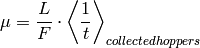
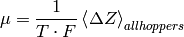

As each charge is collected, it’s velocity in the direction of fieldZ is calculated. The mobility is calculated from the average velocity. Charges that aren’t collected don’t contribute to the mobility:

where L is the depth of the film along the Z-axis, F is the field and t is the time at which a hopper is collected.
This mobility is labelled as MOBILITY FROM COLLECTION TIMES in ToFeT’s output.
ToFeT uses the Mobilities from average velocity to determine when the simulation has converged (as defined by tol). If maxTime isn’t sufficiently large and some charges aren’t being collected, or if the mobility isn’t well converged from all runs, ToFeT will issue warnings. Depending on these warnings, maxTime or maxRuns should be increased. Alternatively, tol could also be increased.
The aggregate distance moved by all charges along the field is used to calculate a velocity, and hence mobility. All charges, even those that aren’t collected, contribute to this value.

where Delta Z is the total distance moved by a hopper along the Z-axis, and T is the total time of the simulation (aggregated over all runs).
This mobility is labelled as MOBILITY FROM TOTAL DISPLACEMENT AND TOTAL TIME in ToFeT’s output.